Challenge 1
Nhìn hình và chọn từ/cụm từ đúng.
Người lớn: nguồn/ghi chú
🖼️một con mèo, biến thể luyện số ít. Chọn từ/cụm từ đúng.
Đáp án giáo viên xem trong bài nguồn, không hiển thị trước cho bé.
Ảnh WebP nhẹ, không có nhãn đáp án trong bitmap. Câu hỏi và lựa chọn nằm riêng. Audio Challenge do chủ dự án bổ sung; hiện có thể nhờ người lớn đọc từ bài nguồn.
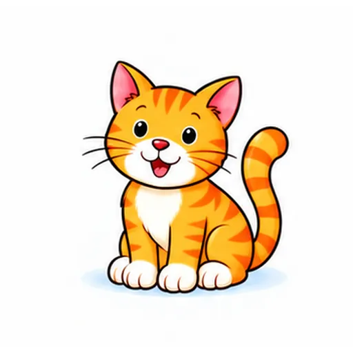
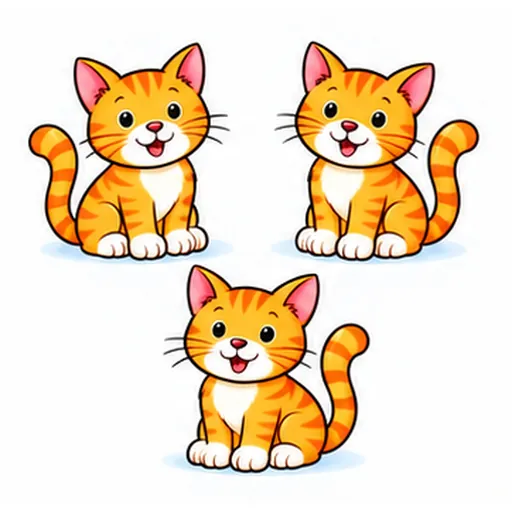
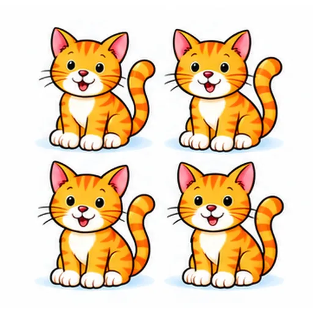
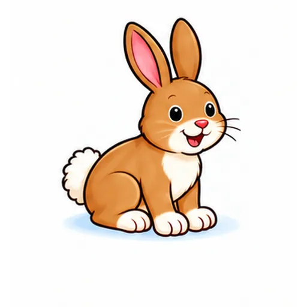
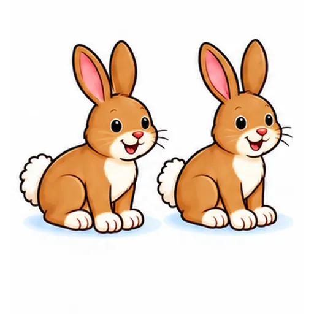
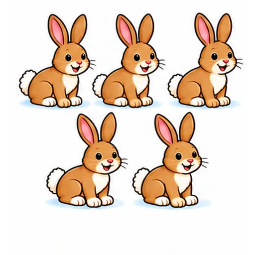
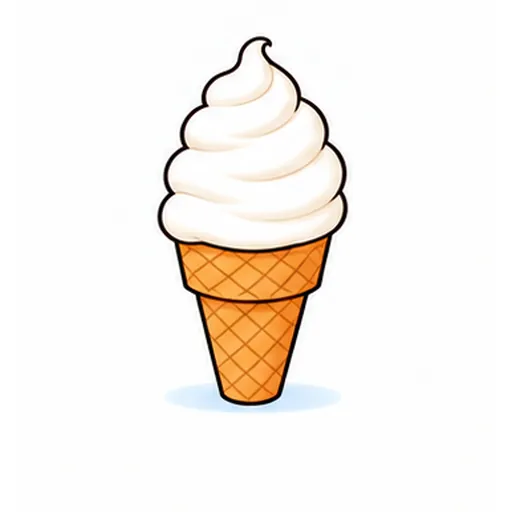
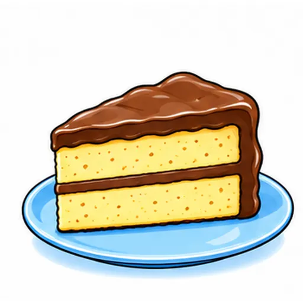
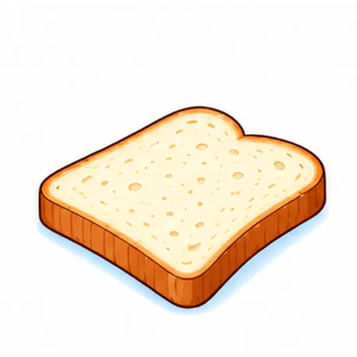
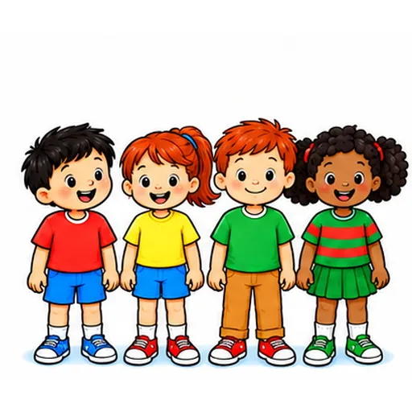
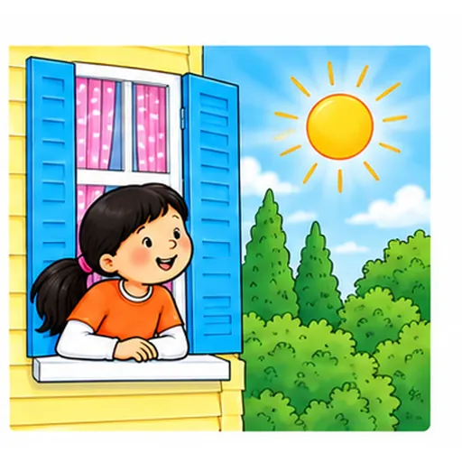
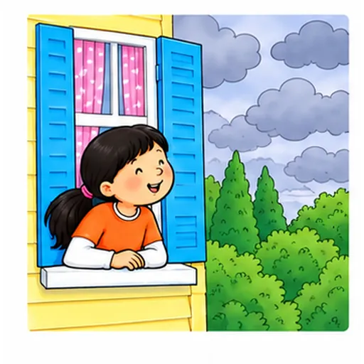
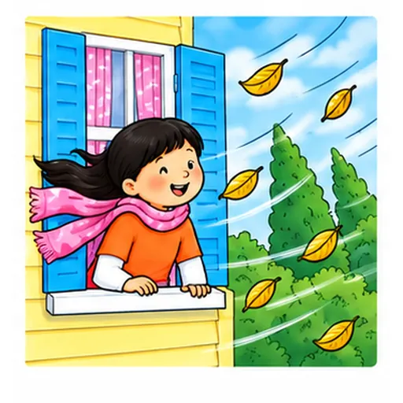
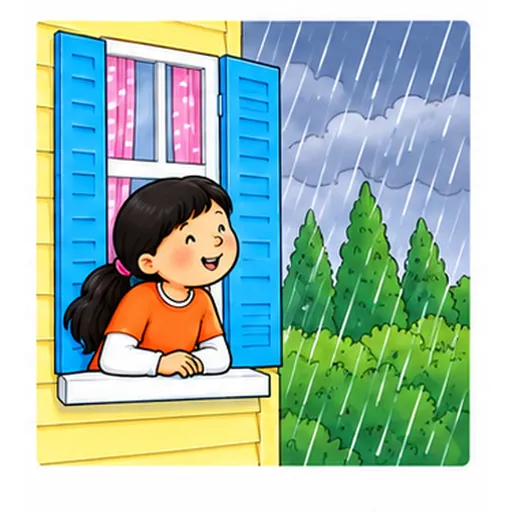
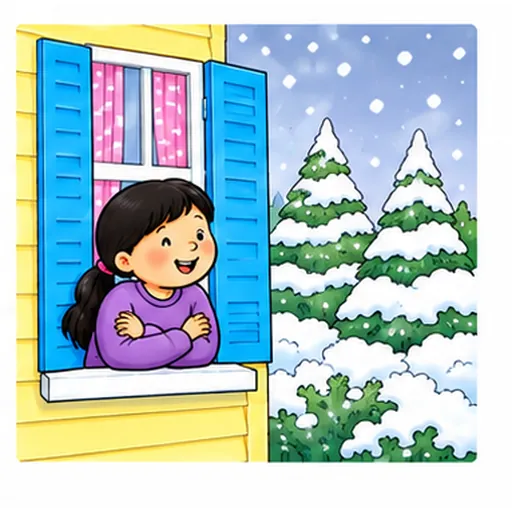
Nhìn hình và chọn từ/cụm từ đúng.
🖼️một con mèo, biến thể luyện số ít. Chọn từ/cụm từ đúng.
Đáp án giáo viên xem trong bài nguồn, không hiển thị trước cho bé.
Nghe audio hoặc người lớn đọc, rồi chọn đáp án phù hợp.
Nghe từ/cụm từ và chọn đúng mục.
Nghe từ/cụm từ và chọn đúng mục.
Đáp án giáo viên xem trong bài nguồn, không hiển thị trước cho bé.
Nhìn hình. Điền: `cat_`.
🖼️nhóm 3 con mèo. Điền: `cat_`.
Đáp án giáo viên xem trong bài nguồn, không hiển thị trước cho bé.
Nhìn hình. Ghép với từ hoặc câu phù hợp.
🖼️một con mèo, biến thể luyện số ít. Điền chữ cái của thẻ phù hợp.
Đáp án giáo viên xem trong bài nguồn, không hiển thị trước cho bé.
Nhìn hình. Tự nói từ hoặc một câu phù hợp.
Nhóm1a có3 con mèo. Chọn từ số nhiều và số lượng.
Đáp án giáo viên xem trong bài nguồn, không hiển thị trước cho bé.
Nhìn hình. Tự nói từ hoặc một câu phù hợp.
Người lớn chỉ/diễn: một con mèo, biến thể luyện số ít. Bé tự nói từ/cụm phù hợp.
Đáp án giáo viên xem trong bài nguồn, không hiển thị trước cho bé.
Các câu chưa có cue cố định được ghi trong mapping. Câu trả lời cá nhân không bị ép Yes/No. Toàn bộ bài luyện gốc được giữ nguyên.